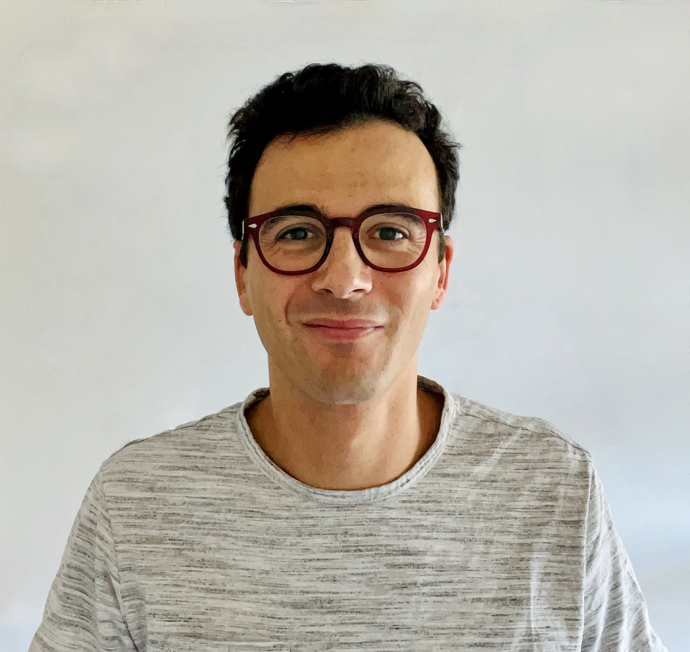

Faculty
Nicola Guglielmi

Nicola Guglielmi is full professor in Numerical Analysis and Chair of the Doctoral School in Mathematics at GSSI. He is interested in the general area of scientific computing, particularly numerical analysis of ordinary and delay differential equations, stability analysis of (discretized) dynamical systems - including variable coefficient and switched systems - and ode methods in matrix perturbation theory and control, for high-dimensional problems. More specifically: Stiff and singularly perturbed problems (in particular in the framework of delay differential equations); software development for general classes of implicit delay differential equations; stability analysis of numerical integrators for ordinary and delay differential equations; computation of the joint spectral characteristics of a set of matrices, with application to contractivity analysis of time dependent systems of differential and difference equations; ode-based pseudospectral computations for both unstructured and structured problems; non-smooth analysis of discontinuous differential equations with focus on the computation of weak solutions.
Personal Web Page
Francesco Tudisco

Francesco Tudisco is an Associate Professor (Reader) in Machine Learning affiliated with the University of Edinburgh, the Maxwell Institute for Mathematical Sciences, and the Gran Sasso Science Institute. His research interests lie at the intersection between machine learning and applied mathematics, particularly numerical analysis and scientific computing. His recent work includes the design and analysis of physics-inspired deep learning models for scientific simulations and climate forecasting, machine learning on graphs, compression and speed-up of deep learning models, trustworthiness and robustness of deep learning models, and theory of deep learning, including the analysis of neural networks in the infinite width and infinite depth limits.
Personal Web Page.
Postdocs
Marco Sutti

I earned my Ph.D. in Mathematics from the University of Geneva (Nov 2020) under the supervision of Bart Vandereycken, after completing an M.Sc. in Computational Science and Engineering at EPFL (2015) and earlier B.Sc./M.Sc. studies in Civil Engineering at the Politecnico di Milano’s Lecco campus. Growing up in Valtellina, Lombardy, I initially pursued civil engineering studies, but during that time, I discovered a stronger passion for the more theoretical and scientific aspects of mathematics. This realization led me to move to Lausanne, where I completed my master’s at EPFL (2013‑2015).
After my doctorate, I took a brief interdisciplinary pause (2021‑early 2022) to study Mandarin Chinese at the National Taiwan Normal University. I then began a postdoctoral fellowship at the National Center for Theoretical Sciences (NCTS) in July 2022, continuing there until 2025. On 1 August 2025, I joined the Gran Sasso Science Institute (GSSI).
I’ve loved geometry since childhood—drawing shapes on notebook margins sparked a fascination with how space works. Today, that curiosity drives me to tackle problems that sit at the intersection of mathematics and code. I focus on:
Riemannian geometry & matrix manifolds – geometric structures for non‑Euclidean optimization and inference. Low‑rank matrix & tensor decompositions – compact, efficient representations of high‑dimensional data. Computational geometry – algorithmic methods for processing and analyzing geometric data. My personal webpage is: https://marcosutti.net/
Office: Office PT-D, GSSI "Mariani Building", Viale Francesco Crispi, 3, 67100 L'Aquila
Asma Farooq

Francesco Paolo Maiale

PhD Students
Eugenio Turchet

I am a PhD student in Mathematics at GSSI. I obtained both my Bachelor and Master degree in Mathematics from the University of Bologna. My main research interest is numerical linear algebra. During my Master thesis I worked on matrix equations arising from PDE discretizations and on projection and Krylov methods for their numerical solution. Currently, my research focuses on matrix nearness problems, i.e. optimization problems where a given matrix is projected onto sets of structured matrices (for example correlation or covariance matrices). I am particularly interested in the efficient computation of eigenvalues/eigenvectors in this context and in the design and analysis of fast solvers that preserve the underlying matrix structure.
Bernardo Collufio

Bernardo Collufio is a PhD student with PNRR fellowship in “Mathematics in Natural, Social and Life Sciences” curriculum at GSSI. He obtained his Bachelor’s degree in Mathematics at University of Messina and Master’s degree in Applied Mathematics at University of Pavia, with a thesis entitled "Mathematical and numerical study of first ionization phenomena for atomic hydrogen in an extended phase space". His main interests concern the study of numerical schemes for solving kinetic PDEs arising in many physical processes in the context of Gas Dynamics, Fluid Dynamics and Plasma Physics, with a particular focus on high accuracy, asymptotic preserving property and physical consistence.
From December 2024 he manages the website of the GSSI Numerical Analysis and Data Science group and co organizes seminars of the cycle COMPiLE Reading Group.
Emanuele Zangrando

Francesco Fabbri

Joint supervision with Prof. Francesco Viola.
Grigorii (Grisha) Buklei

Grigorii (Grisha) Buklei is a PhD Student in Mathematics in Natural, Social and Life Sciences, GSSI. He was awarded with PNRR-funded scholarship. Previously, Grigorii was a Research Intern at the Complex Systems Modelling and Control Laboratory, Department of Computer Sciences, Higher School of Economics (Moscow, Russia). He holds a BSc in Applied Mathematics and Information Science from the Higher School of Economics. His current research interests are in the scope of mathematical modeling, Bayesian experimental design, and algorithmic game theory.
Helena Biscevic

Joint supervision with Prof. Raffaele D'Ambrosio.
Pietro Sittoni

Pietro Sittoni is a PhD student in Mathematics in Natural, Social, and Life Sciences. He holds a MSc in Data Science from the University of Padova. During his thesis, he studied the properties of subhomogeneous operators, exploiting them to present a new analysis of the existence and uniqueness of fixed points, using it to design stable deep equilibrium models and applying it to mathematical optimization.
Rinat Kamalov

Joint supervision with Prof. Vladimir Protasov.
Sara Tarquini

Former Members
Anton Savostianov (PhD student)
Alessia Andò (PostDoc)
Konstantin Prokopchik (PhD student)
Mattia Manucci (PhD student)
Miryam Gnazzo (PhD student)
Stefano Sicilia (PhD student)
Arturo De Marinis (PhD student)
Piero Deidda (PostDoc)